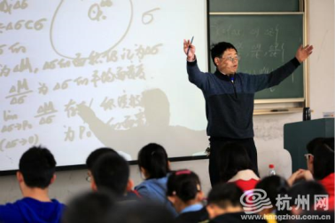

返回主页
大学和大师

若般图书馆使用说明
快乐PD妈 读书研讨班
中国梦娃
航海企图
浙江大学数学系有悠久而辉煌的历史，特别是1929年以后，我国著名数学家陈建功教授和苏步青教授先后来浙江大学数学系工作，形成了知名的“陈苏学派”，培养了程民德、谷超豪、夏道行、王元、胡和生、石钟慈、沈昌祥院士和熊全治、杨忠道、周元�龅纫慌�蜚声海内外的学者。近年来，又培养了林芳华、励建书和汪徐家等一批在国际上有重要影响的杰出青年数学家，为中国现代数学的发展做出了重要贡献。
浙江大学数学系现有在编教师119人，其中包括国际数学家大会特邀报告人4人，浙江大学光彪讲座教授1人、特聘教授2人，教育部长江学者奖励计划讲座教授2人、特聘教授2人，国家级突出贡献专家5人，教授51人（其中博士生导师42人）。
浙江大学数学系设有“高等数学研究所”、“科学与工程计算研究所”、“计算机图像图形研究所”、“运筹与控制科学研究所”、“统计研究所”和“系统优化技术研究所”，取得了丰富的研究成果。1990年以来，获得国家自然科学奖4项（其中1项为第二获奖单位），国家级教学成果奖2项，省部级教学科研成果奖40多项，每年在研国家级项目40余项。
应用数学（联合基础数学）是首批国家重点学科，基础数学和应用数学2001年再次被评为国家重点学科。数学系设有博士后流动站、数学一级学科博士点、首批国家理科人才培养基地和三个本科专业。数学是“九五”和“十五”“211”工程重点建设学科，也是浙江大学CAD&CG国家重点实验室的创办单位和主要依托单位。
2002年，国际著名数学家丘成桐教授在浙江大学创建数学科学研究中心并出任中心主任，一批在国内外有重要影响的数学家在浙江大学招收培养研究生，高水平的学术研究和交流对浙江大学数学学科的发展起到了重要的推动作用。
President's Daily Brief
Roban Sphere
古之学者为己，今之学者为人。我们用心做，您来细细品。您也可以 先下载一个应用程序（App），有空再慢慢看。
做党和人民满意的好老师
公共图书馆发展规划
version:1.0; jobnet@188.com © retter2012.com